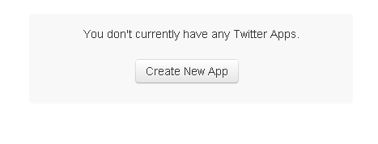
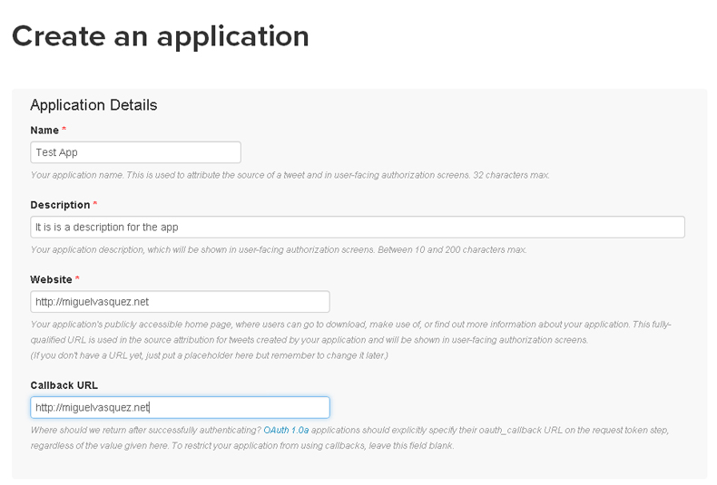
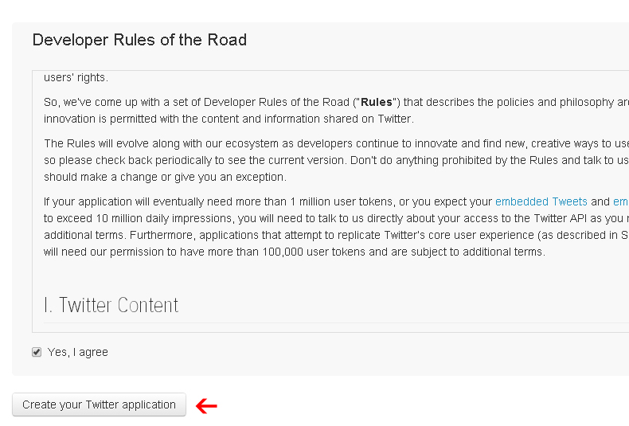
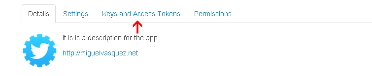
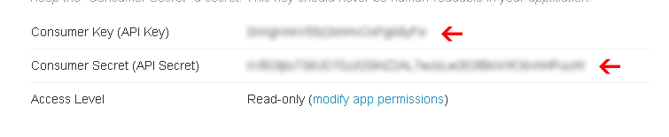

“ShotPro Community Script” Documentation by “Miguel Vasquez” v1.0
“ShotPro Community Script”
Thank you for purchasing my script. If you have any questions that are beyond the scope of this help file, please feel free to email via miguelvasquezweb@gmail.com Thanks so much!
Table of Contents
- Setting MySQL
- Uploading Files
- Installation
- Settings Admin Panel
- Create App Twitter
- Customize
- Sources and Credits
ShotPro Community Script is a community of graphic designers and web where they share their latest and
most impressive works.
users can create projects with attachments, lists, follow other users, comment and give me like a shot.
In addition to receiving notifications, send private messages with attachments, designers look for skills, location or available for hire,
create jobs and ads.
Features:
- Built with Laravel
- Bootstrap
- Authentication with Twitter
- Font Awesome
- IcoMoon
- Flat UI
- Send message direct/private with attachments
- Teams
- Team Members
- Users can create Projects
- Users can create Lists to organize your favorite designers
- Follow/Unfollow users
- Tags
- Find people
- Notifications Real-time
- Comments on Shots
- Like on Shots
- Like on Comments
- Block/Unblock users
- Option Delete Account
- Upload cover
- User validation by email
- Recovery password
- An email, by account
- Report users/publications
- Change password
- API for developers
- SiteMaps
- Edit/Delete publications
- Users can create Ads
- Users can create Jobs
- Integration with Paypal
- Animated Gifs allowed(Only if it is enabled on the server Imagick)
- Views Counter
- Color Palette in the shots/publications
- XSS: Protection from cross site scripting
- Secure Bcrypt password hashing
- SMTP Support
- Navigation with arrow keys
- Like in the shots with the "L" key
- Share social
- Skills of the user
- Availability to be hired
- Last Shots, Popular, Most Commented, Most Viewed
- Feed users you follow
- Overall statistics
- Goods for Sale / Users can link their products for sale
Requirements: - top
- PHP 5.4 or Greater
- cURL
- PDO Driver
- GD Library or ImageMagick or Imagick.
- Enabled function mbstring
- This script was developed with PHP OOP and MVC
- allow_url_fopen (PHP.INI) is ON
- MCrypt PHP Extension
A) Setting MySQL - top
This script works with PHP 5.4 and MySQL 5.
The first thing to do is:
- 1.) Create a database
- 2.) Create a user for database
B) Uploading Files - top
A) upload the folder "Script" to the "public_html" folder on your server.
B) Log into your phpMyAdmin and import the shotpro.sql file located in the folder "Mysql" (NOTE: the database already must be created )
C) Installation - top
Make sure PDO driver is enabled on your server, if not, you should ask your hosting provider
activation of this driver, so that the script can work.
After you have uploaded all files can start to setup the files.
›› Database Connection/Mail Set Up
- Open the file config.php located in the folder "app/config", with any text editor, e.g: NOTEPAD
- change the following parameters, for theirs:
Database Connection
'db_host' => 'HOST', // Default localhost
'db_name' => 'DATABASE NAME',
'db_user' => 'USER',
'db_password' => 'PASS',
Mail Set Up
'mail' => 'Sender of all emails ie: no-reply@gmail.com',
'name' => 'Name of Sender ie: ShotPro',
- Save and close.
D) Settings Admin Panel - top
Access to admin panel
- Just enter from http://yousite.com/login and enter the following credentials.
User: Admin
Pass: 123456
In admin panel you can:
- Change the site name
- Change the site title welcome
- Statistics
- Enable/Disable news registrations
- Enable/Disable login with Twitter
- Enable/Disable Captcha
- Enable/Disable Email Verification
- Allow attachments in Shots
- Allow attachments in Messages
- Set keywords for the site. (SEO)
- Add a description (SEO)
- Long of private messages, and shots
- Create/Edit pages e.g.: Help, Privacy, etc.
- Payments Settings.
- See payments - Ads / Jobs / Teams
- Social Login
- Set up social accounts
- Manage members.
- Manage members reported.
- Manage shots reported.
- Manage Lists
- Manage Projects
- Manage Ads
- Manage Jobs
- Admin can enable or disable the members records, and to invite with PRO User whether or not members all from the admin panel.
1) Enter https://apps.twitter.com/

2) Click on "Create New App"

4) Fill out all fields
- Name: Your application name. This is used to attribute the source of a tweet and in user-facing authorization screens. 32 characters max.
- Description: Your application description, which will be shown in user-facing authorization screens. Between 10 and 200 characters max.
- Website: Your application's publicly accessible home page, where users can go to download, make use of, or find out more information about your application. This fully-qualified URL is used in the source attribution for tweets created by your application and will be shown in user-facing authorization screens.
(If you don't have a URL yet, just put a placeholder here but remember to change it later.)
- Callback URL Where should we return after successfully authenticating? OAuth 1.0a applications should explicitly specify their oauth_callback URL on the request token step, regardless of the value given here. To restrict your application from using callbacks, leave this field blank.

5) Read "Developer Rules of the Road" and then click "Create your Twitter application"

6) Click "Keys and Access Tokens"

7) Setup in http://yousite.com/panel/admin/social-login
F) Customize - top
Changing the logo
- Path: public / img / logo.png
Changing the logo footer
- Path: public / img / logo-watermark.png
Changing the favicon
- Path: public / img / favicon.ico
Change the background
- Path: public / img / bg.jpg
Change the background header index page
- Path: public / img / header.jpg
- CSS: Line 543 in public / css / main.css
Change the background Join Page
- Path: public / img / bg-join.jpg
- CSS: Line 1289 in public / css / main.css
Change the default link color
- CSS: Line: 207 in public / css / flat-ui.css
Change default image advertising
- Path: public / ad / ad.png
Change default avatar
- Path: public / avatar / default.jpg
Change default image jobs
- Path: public / avatar / job_avatar.jpg
Cover default
- Path: public / cover / cover.jpg
* Sitemaps - top
To call the SiteMaps must place the following URL
-> http://yousite.com/sitemaps.xml
G) Sources and Credits - top
I've used the following files as listed.
- Laravel - http://laravel.com/
- jQuery - http://jquery.com/
- Bootstrap - http://getbootstrap.com/
- Font Awesome - http://fortawesome.github.io/Font-Awesome/
- IcoMoon - http://icomoon.io
- Flat UI - http://designmodo.github.io/Flat-UI/
- Placeholder Plugin jquery.placeholder.1.1.1.min.js // Mike Taylor, http://miketaylr.com
- Char Count count.js // Alen Grakalic
- jquery Form // malsup.com/jquery/form/
- jqueryTimeago.js // http://timeago.yarp.com/
- colorpicker.js // Stefan Petre www.eyecon.ro
- jquery.colorbox.js // Jack Moore - http://www.jacklmoore.com/colorbox
- Readmore - http://jedfoster.com/Readmore.js/
- Bootboxjs - http://bootboxjs.com/
- Images - unsplash - http://unsplash.com/ -- splitshire http://www.splitshire.com/
- Avatars - http://uifaces.com/
- Fonts - https://www.google.com/fonts
- http://www.tinymce.com/
- https://github.com/sliptree/bootstrap-tokenfield
- http://lokeshdhakar.com/projects/color-thief/
- http://morrisjs.github.io/morris.js/
- https://github.com/ubilabs/geocomplete/
Miguel Vasquez
Go To Table of Contents